Datentypen
Joern Ploennigs · AI4SC
Midjourney: Datatype Jungle, ref. Henri Rousseau
Lernziele
Was Sie lernen:
- Variablen definieren, Datentypen mit
type()bestimmen - Einfache Datentypen (
int,float,bool,str,bytes) einsetzen - Einfache von zusammengesetzten Datentypen unterscheiden
- Zusammengesetzte Datentypen (
list,tuple,set,dict) verwenden
Warum das wichtig ist:
- Geeignete Typen sichern die Korrektheit technischer Berechnungen
- KI-generierter Code wählt Typen automatisch — Ihr Job ist die Verifikation
Einstieg: Was stimmt hier nicht?
- Was ist
type(flaeche)? - Der Code läuft ohne Fehlermeldung
- Wie weit liegt
15 m²von der Wirklichkeit entfernt?
Messprotokoll:
- Höhe: 2,85 m
- Breite: 4,70 m
Variablen verknüpfen Namen mit Werten
In Programmiersprachen werden Werte in Variablen gespeichert:
Variablen
Bei der Programmierung ist eine Variable ein Wert, der bei der Ausführung eines Computerprogramms auftritt und meist verändert werden kann. Eine Variable wird normalerweise im Quelltext durch einen Namen bezeichnet, hat einen Datentypen und eine Adresse im Speicher des Computers.
Daneben gibt es auch Konstanten:
Konstante
Eine Konstante ist ein Wert, der nicht verändert werden kann, nachdem er einmal zugewiesen wurde.
Variablen in Python
Variablen in Python müssen nicht explizit deklariert werden (wie in vielen anderen Programmiersprachen), sondern werden durch Zuweisungsoperator = einem Wert zugeordnet.
Beispiel:
Der Typ einer Variable kann mit der Funktion type(a) abgefragt werden.
Variablennamen
- Verwenden Sie Namen, die die Bedeutung und den Inhalt der Variablen klar vermitteln
- Vermeiden Sie übermäßig generische Namen wie “Daten” oder “v”
- Halten Sie die Namenskonventionen in Ihrem Code konsistent
- Verwenden Sie Kleinbuchstaben mit Unterstrichen (_) zur Trennung von Wörtern (Snake Case), z.B.
meine_variable - Vermeiden Sie Sonderzeichen wie ä, ö, ü, ß da diese in der Zeichenkodierung Probleme verursachen können
- Verwenden Sie keine reservierten Schlüsselwörter der Programmiersprache als Variablennamen (z.B.
if,for,while) - Vermeiden Sie Abkürzungen oder Akronyme, es sei denn, sie sind allgemein verständlich (z.B. “BIP”)
- Streben Sie nach einem Gleichgewicht zwischen Klarheit und Kürze
Beispiele für gut und schlechte Variablennamen
| Gut | Schlecht | Beschreibung |
|---|---|---|
| age | a | Steht eindeutig für das Alter einer Person. |
| first_name | fn | Beschreibt eindeutig den Vornamen. |
| birth_year | by | Eindeutig und verständlich für das Geburtsjahr. |
| email_address | Verdeutlicht, dass es sich um eine E-Mail-Adresse handelt. | |
| is_on | on | is_ zeigt, dass es sich um einen Wahrheitswert handelt. |
| product_list | products | Macht deutlich, dass es sich um eine Liste handelt. |
| score_total | score | Zeigt, dass es sich um die Gesamtsumme handelt. |
| user_count | count | Gibt an, dass es sich um die Anzahl der Nutzer handelt. |
Python weist Datentypen dynamisch zu
Datentyp
Der Datentyp bestimmt, wie ein Wert im Arbeitsspeicher abgelegt wird und welche Operationen auf ihm ausgeführt werden können.
Datentypen - Struktur
Einfache Datentypen (Primitive Datentypen) können nur einen Wert des entsprechenden Wertebereichs aufnehmen.
Zusammengesetzte Datentypen sind ein Datenkonstrukt, das sich aus einfacheren Datentypen zusammensetzt. Da sie theoretisch beliebig komplex werden können, werden sie auch häufig schon zu den Datenstrukturen gezählt.
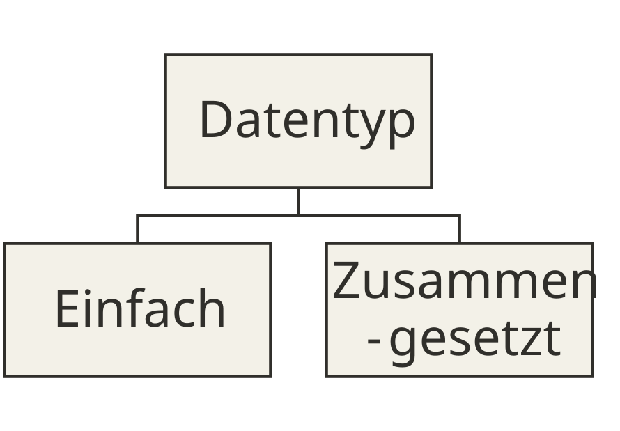
Datentypen im Speicher
- Jeder Datentyp legt fest, wie Bits im Speicher interpretiert werden (→
01c_Computerhardware):
| Typ | Darstellung | Speicher |
|---|---|---|
int32 (C) |
Zweierkomplement | 4 Bytes |
float (Python) |
IEEE 754 | 8 Bytes |
str |
Unicode (UTF-8) | 1–4 Bytes je Zeichen |
- Python-
intwächst mit dem Wert, es gibt keinen Überlauf.
Typwahl als Modellierungsentscheidung
intfür Messwerte in Metern: Nachkommastellen fehlen → Rundungsfehler (15 statt 13,395 m²)floatfür Messwerte in Metern: Nachkommastellen bleiben erhalten → korrektDen falschen Typ zu wählen ist kein Stilproblem — es ist ein Modellfehler.
Einfache Datentypen – Numerisch
Numerische Datentypen repräsentieren Zahlen.
Ganze und Natürliche Zahlen werden als signed und unsigned Integer abgebildet. Nach Speicherkapazität unterscheidet man
- Short Integer (16 Bit),
- Integer (32 Bit) und
- Long (64 Bit).
Reelle Zahlen werden als Gleitkommazahl
- Float (32 Bit) oder
- Double (64 Bit) abgebildet.
Diese Varianten werden in verschiedenen Programmiersprachen unterschiedlich bezeichnet.
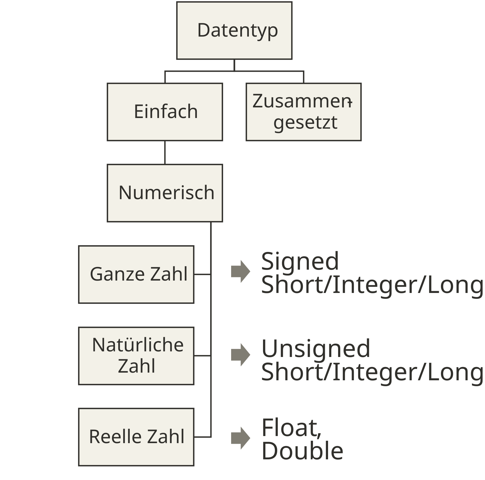
Einfache Datentypen – Numerisch in Python
Ganze und Natürliche Zahlen werden in Python als Integer
intabgebildet und nicht unterschieden.Reelle Zahlen werden als Gleitkommazahl
floatabgebildet.Info: Cython, eine typisierte Variante von Python die nach C compiliert wird (also nicht interpretiert) unterscheidet zwischen
(signed) short/int/longTypen undfloat/doubleum schneller zu laufen.
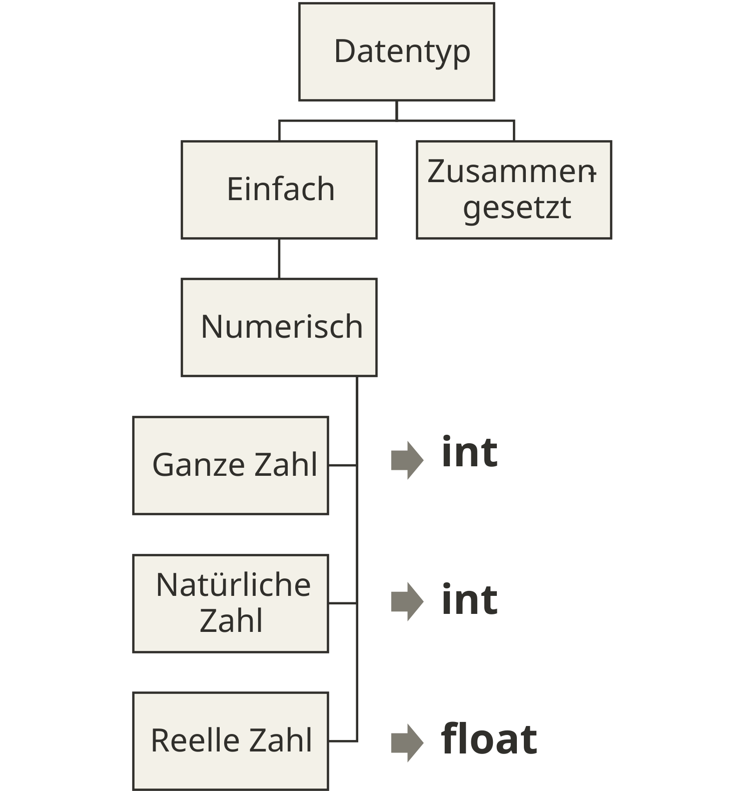
Einfache Datentypen – Logische
Logische Datentypen repräsentieren binäre Werte wie Wahr oder Falsch.
Wahrheitswerte werden als boolesche Werte bezeichnet.
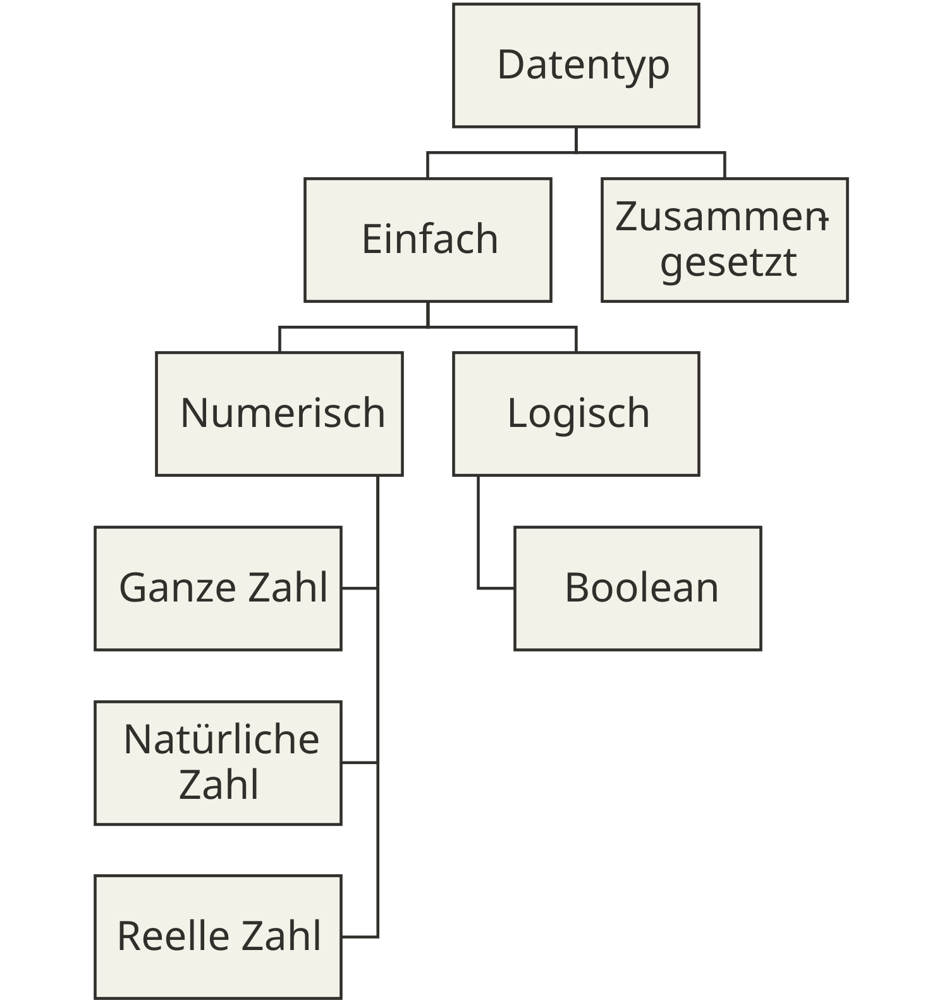
Boolean repräsentiert Wahrheitswerte als True oder False
In Python werden boolesche (binäre) Werte als
boolbezeichnet.Der Wert „Wahr” wird in Python als
Truegeschrieben und „Falsch” alsFalse.
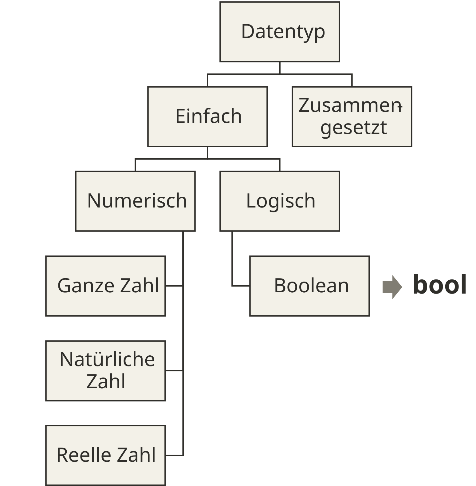
Einfache Datentypen – Textuell
Textuelle Datentypen repräsentieren Buchstaben.
Einzelne textuelle Zeichen werden als Char bezeichnet.
Mehrere textuelle Zeichen werden als String bezeichnet (Sie werden z. T. auch zu den zusammengesetzten Datentypen gezählt).
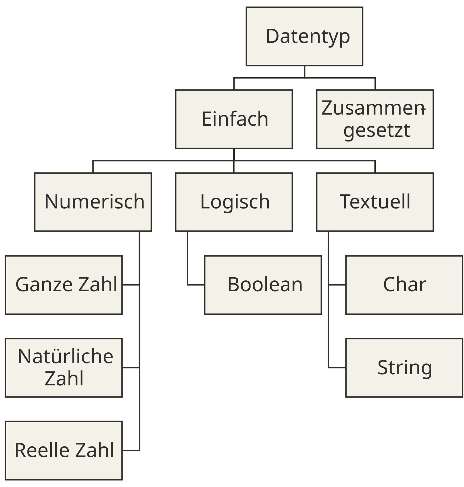
Einfache Datentypen – Textuell in Python
Einfache Datentypen – Binär
Binäre Datentypen können beliebige Zeichen repräsentieren.
Einzelne binäre Zeichen werden als Byte bezeichnet.
Mehrere Zeichen werden als Bytearray oder Bytestring bezeichnet (Sie werden z.T. auch zu den zusammengesetzten Datentypen gezählt).
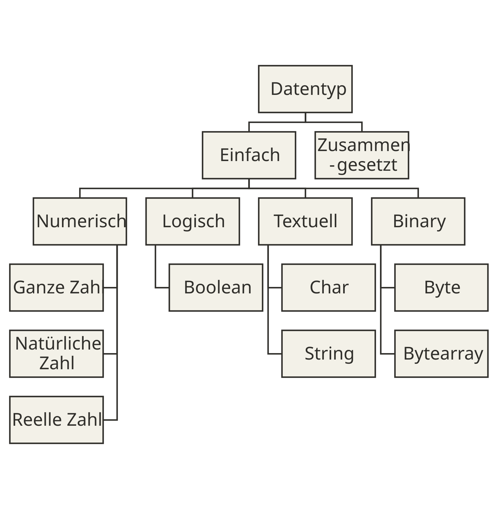
Einfache Datentypen – Binär in Python
Zusammengesetzte Datentypen – Sequenzen
Sequenzen sind eine geordnete Abfolge an Werten, meist vom selben Datentyp.
Sequenzen werden in Programmiersprachen meist als Array bezeichnet. Arrays haben oft eine feste, unveränderliche Länge, die bei der Erzeugung definiert wird. Die Werte sind veränderlich.
Beispiel in Cython:
Listen sind ein weiterer typischer Datentyp für Sequenzen. Listen haben oft keine feste Länge und können beliebig erweitert werden.
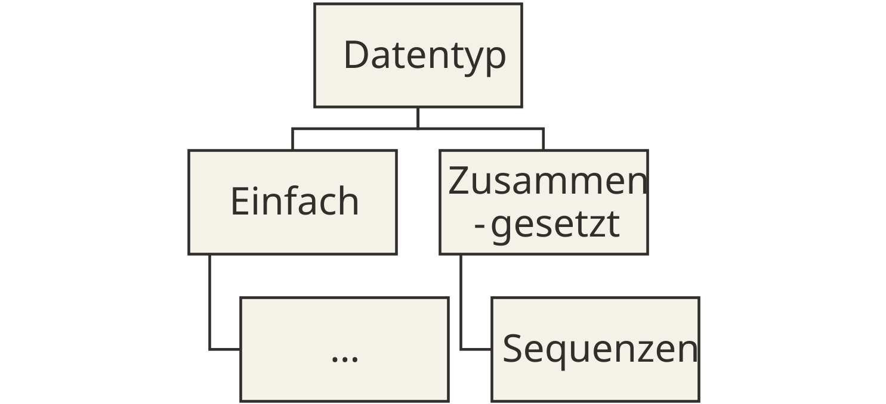
Zusammengesetzte Datentypen – Sequenzen in Python
Python unterstützt keine Arrays sondern nutzt
listundtuple. Sie werden durch eckige oder runde Klammern deklariert.tuplehaben eine feste Länge in Python. Sie sind unveränderlich (immutable).Zusätzlich gibt es den besonderen Datentyp
rangeum Sequenz von ganzen Zahlen zu erzeugen.
Zusammengesetzte Datentypen – Sequenzen Zugriff auf Elemente
Um auf ein Element zuzugreifen wird die Elementzahl in eine eckige Klammer geschrieben.
In Python wird der Index in einer Liste ab 0 gezählt (ab 1 in einigen Sprachen).
Eine Besonderheit in Python ist dass auch negative Indizes erlaubt sind um das Ende von Listen zuzugreifen (a.k.a. Syntaxzucker)
In Python kann durch Slicing auch auf Listenteile zugegriffen werden
Zusammengesetzte Datentypen – Mengen
Mengen stellen eine Menge an Werten ohne Wiederholungen dar, so wie in der Mathematik.
In den meisten Programmiersprachen werden Mengen als Set bezeichnet.
Es wird häufig auch zwischen Datentypen für sortierte und unsortierte Sets unterschieden.
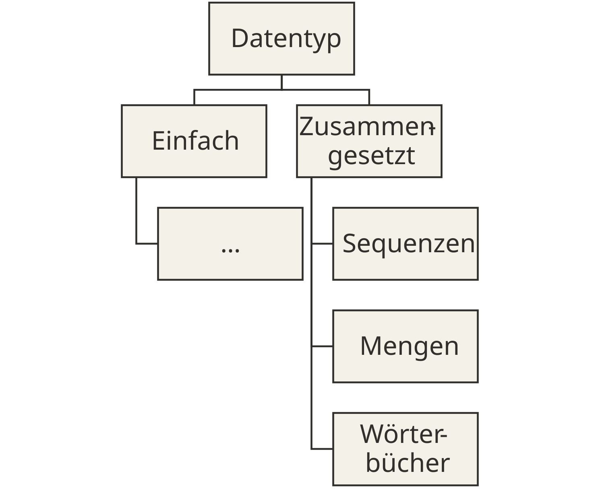
Zusammengesetzte Datentypen – Mengen in Python
Zusammengesetzte Datentypen – Wörterbücher
Wörterbücher bilden eine Abbildung von einer Menge an Schlüsseln auf eine Menge an Werten (Key-Value). Die Menge der Schlüssel darf keine Wiederholung aufweisen, die Menge der Werte schon.
Wörterbücher werden in den meisten Programmiersprachen als Map (von engl. Mapping = Abbildung) bezeichnet.
Info: Sets werden häufig intern als Map ohne Werte gespeichert, weil Schlüssel keine Dopplung aufweisen dürfen.
Zusammengesetzte Datentypen – Wörterbücher in Python
Wörterbücher bilden eine Abbildung einer Menge an Schlüsseln auf eine Menge an Werten (Key-Value).
Wörterbücher werden in Python als
dictbezeichnet. Sie werden durch geschweifte Klammern und Schlüssel/Wert-Paaren definiert.neue Werte können auch dynamisch zugewiesen werden:
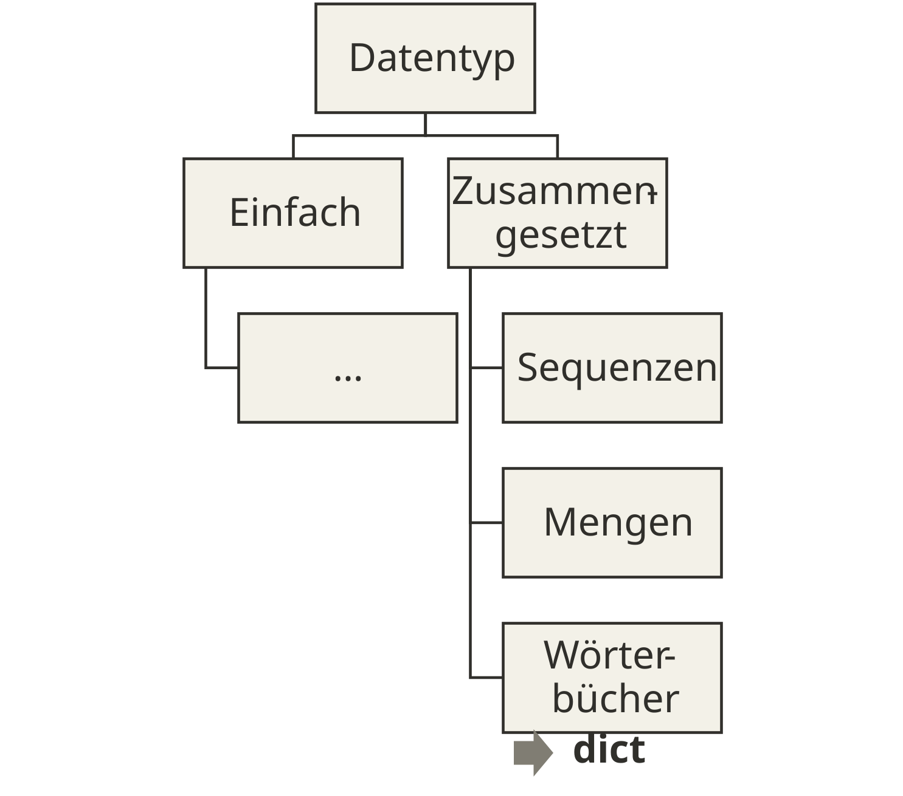
Zusammengesetzte Datentypen – Wörterbücher Zugriff auf Elemente
Um auf ein Element in einem
dictzuzugreifen wird der Schlüssel in einer eckige Klammer geschrieben.Dies funktioniert nicht bei Mengen (
set), da ja kein Wert dahinter steht, sondern nur interessant ist ob der Schlüssel in der Menge enthalten ist. Was man so abfragtUm Werte aus einem
dictzu entfernen, nutzt mandel, bei einemsetremove()oderdiscard()
Datentypen – Undefinierte Werte
In vielen Programmiersprachen gibt es auch einen Wert um einen undefinierten Wert darzustellen, z.B. wenn etwas nicht da ist.
Dieser undefinierte Wert wird häufig als
Null-Wert bezeichnet.Die Notwendigkeit für einen Null-Wert ist heutzutage umstritten und einige moderne Sprachen haben ihn abgeschafft.
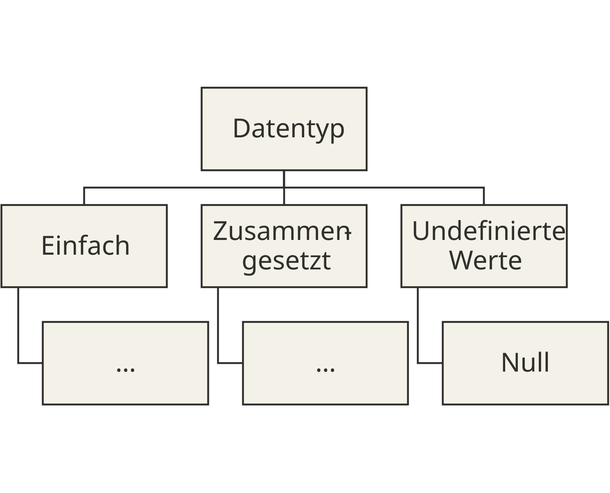
Datentypen – Undefinierte Werte in Python
Der Null-Wert in Python heißt
None.Bedeutet dass eine Variable keinen Wert zugewiesen hat, oder eine Operation keinen Wert zurück gibt.
Der Datentyp einer Variable vom Wert
NoneistNoneType.
Questions

Artificial
Intelligence